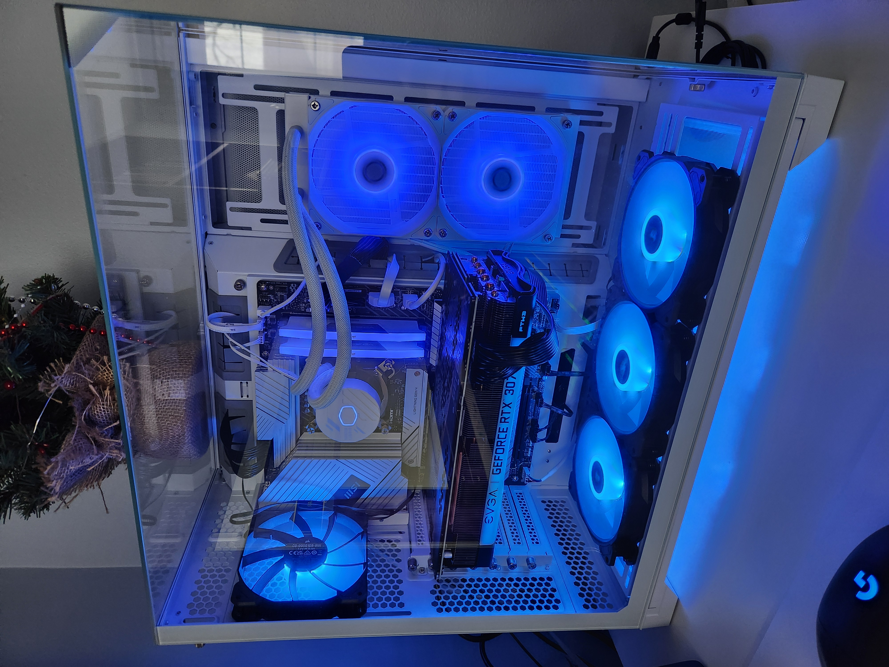

Hello everyone, welcome to my first functioning website. This is a part of the first project for my ITMD-361 class
My name is Jakub, I am a second year ITM major that wants to get into the co-terminal program. I want to focus mainly on coding application to eventually become a software engineer. Currently I am only focusing on school, but after this class I hope to start working on my own personal website so I can add it to my porfolio in the search for future internships.
Recently I built my sister her first computer which has the following specs:

I also built my current computer that I am making this website from, but it is 6 years outdated and is due for an upgrade. Building computers and coding are both really fun for me and I hope that my future job deals with either the hardware or software of computers.